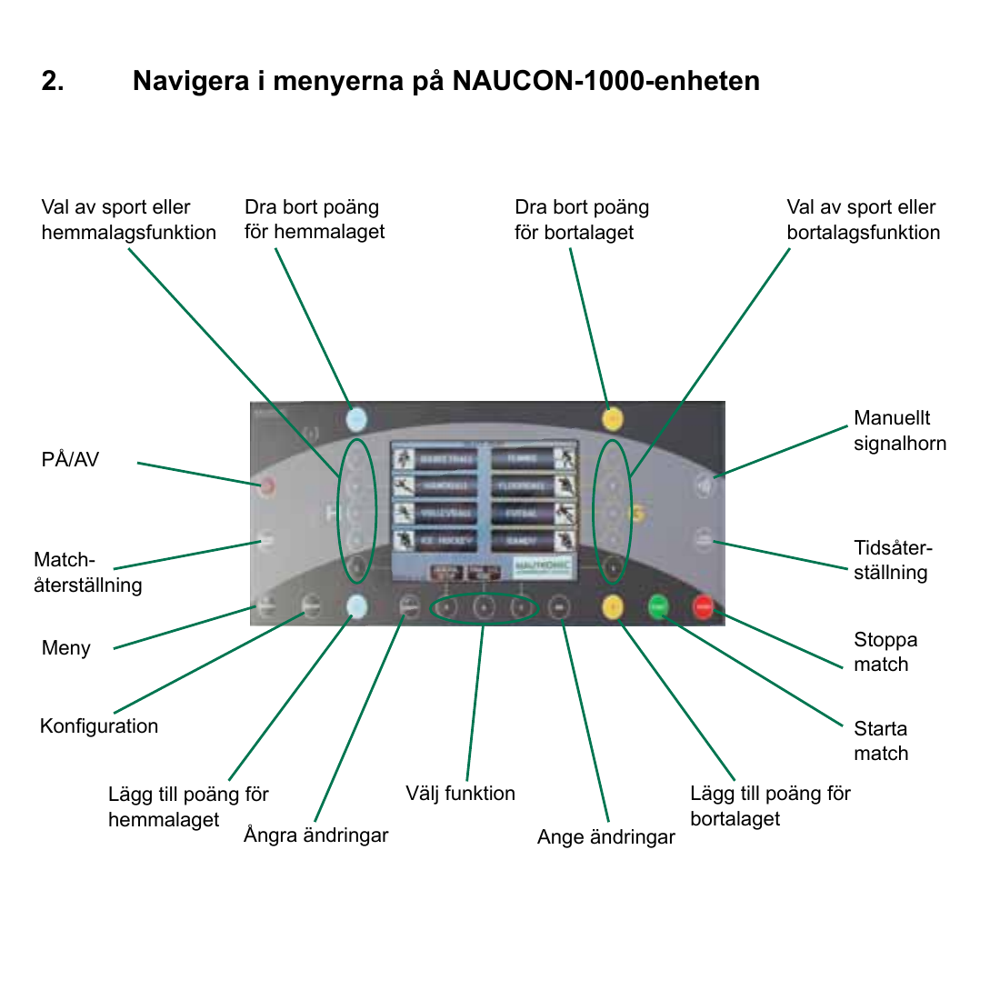

Översikt
Den här lathunden tar dig steg för steg genom det sekretariatet behöver göra under en innebandymatch i Segeltorps hallar. Tavlan är en Nautronic NAUCON-1000.
- Konsolen — vilka knappar är vilka
- Setup före match — sport, periodtid, paustid
- Game reset — rensa föregående match
- Under matchen — 4-manna (ingen utvisning/straff)
- Under matchen — 5-manna (start/stopp, straff, utvisning)
Konsolen — knappöversikt
Det här är NAUCON-1000-handenheten. Etiketterna runt bilden visar vad varje fysisk knapp gör. Resten av lathunden refererar till de här namnen.

Det du främst kommer använda:
- Starta match / Stoppa match — gröna och röda knappen längst ner till höger.
- Lägg till poäng / Dra bort poäng — för hemma respektive borta.
- Match-återställning — nollar matchen (game reset).
- Konfiguration — går in i sport-/inställningsmenyn.
- Manuellt signalhorn — om du behöver tuta manuellt.
- Ange ändringar / Ångra ändringar — bekräfta eller backa ett menyval.
1. Setup före match
Gör det här innan matchen startar. Tar under en minut.
- Slå på konsolen med PÅ/AV (om den inte redan är på).
- Kontrollera att det står Innebandy uppe på tavlan / på konsolens display. Om det står en annan sport — tryck Konfiguration och välj Innebandy via pekskärmen eller med någon av de gula/blåa knapparna 1–4 högst upp.
- Tryck Konfiguration en gång till för att öppna Innebandyinställningar. Här kontrollerar du två saker:
- Period time (Periodtid) — ska matcha det som står i spelschemat. För Segeltorp oftast:
- 5-manna: 3 × 15:00
- 4-manna: 2 × 20:00
- Break time (Paustid) — ska vara 3:00 minuter. Standardvärdet är 10:00, så det här behöver nästan alltid ändras.
- Period time (Periodtid) — ska matcha det som står i spelschemat. För Segeltorp oftast:
- När båda värdena stämmer: backa ut ur menyn med Ange ändringar tills du är tillbaka i normal-läget och tavlan visar 0–0.
2. Game reset — har någon glömt nolla?
Innan din match startar: kontrollera tavlan. Står det poäng från föregående match (t.ex. 4–3 eller en period-siffra som inte är 1)? Då är det bara att göra en game reset.
Så här gör du game reset
- Tryck på Match-återställning på vänster sida av konsolen.
- Konsolen frågar om bekräftelse — tryck Ange ändringar för att bekräfta.
- Tavlan visar nu 0–0, period 1, klocka i utgångsläge. Klart.
3. Under matchen — 4-manna
I 4-manna används inte utvisningar eller straffar — du behöver alltså bara hålla koll på tid och poäng.
Det här är allt du gör under matchen:
- Periodstart: tryck Starta match (gröna knappen) när domaren blåser igång.
- Vid mål: tryck Lägg till poäng för hemmalaget eller Lägg till poäng för bortalaget. Klockan fortsätter — du behöver inte stoppa.
- Vid avblåsning där tiden ska stoppas (om domaren begär): tryck Stoppa match (röda knappen). Tryck Starta match igen när det börjar.
- Vid periodslut: signalhornet ljuder automatiskt. Pausen räknas ner och nästa period startar när du trycker Starta match igen.
- Felregistrerat mål? Tryck Dra bort poäng för rätt lag.
4. Under matchen — 5-manna
5-manna använder samma start/stopp och poäng som 4-manna, plus utvisningar och straffar.
Huvudflödet (samma som 4-manna)
- Periodstart: Starta match.
- Vid mål: Lägg till poäng för hemmalaget / …för bortalaget.
- Vid avblåsning där tiden ska stoppas: Stoppa match. Starta igen med Starta match.
- Vid periodslut: signalhornet ljuder automatiskt. Pausen räknas ner och nästa period startar när du trycker Starta match.
Utvisning
När domaren visar utvisning (typiskt 2 minuter):
- Tryck Stoppa match så fort domaren blåser av.
- Tryck Välj funktion (knappen i mitten på nedre raden) och välj Penalty för det lag som ska utvisas. På pekskärmen kan du också trycka direkt på lagets Penalty-ruta.
- Skriv in spelarens nummer på det numeriska tangentbordet och bekräfta.
- Välj typ av utvisning:
- 2 — vanlig 2-minutersutvisning
- 5 — 5-minutersutvisning
- Misconduct 10 — 10 min för osportsligt uppträdande
- 2+2, 5+2, 2+10 — kombinationer (om domaren signalerar två förseelser)
- Bekräfta med Ange ändringar. Tavlan visar nu utvisningstiden bredvid lagets poäng och räknar ner när matchen är igång.
- Tryck Starta match när domaren blåser igång igen.
Straff (penalty shot)
När domaren tilldömer en straff:
- Tryck Stoppa match.
- Klockan står still under straffläggningen — du gör inget mer på tavlan medan straffen läggs.
- Vid mål: tryck Lägg till poäng för rätt lag.
- Vid räddning eller miss: ingen poängändring.
- Tryck Starta match när domaren blåser igång spelet igen.
Time-out
Om ett lag begär time-out:
- Tryck Stoppa match.
- Välj Time-out för rätt lag (via Välj funktion eller pekskärmen).
- Tavlan räknar ner 30 sekunder automatiskt och tutar när det är slut.
- Tryck Starta match när spelet återupptas.
Manuellt signalhorn
Om du behöver tuta manuellt (t.ex. vid begärd time-out som tavlan inte fattar): tryck Manuellt signalhorn uppe till höger på konsolen.
Vid problem
- Tavlan svarar inte: kontrollera att konsolen är på (display lyser). Försök PÅ/AV en gång.
- Fel sport visas: gör om setup.
- Periodtid eller paustid stämmer inte: gå in i Konfiguration mellan perioderna och justera. Det är OK att ändra under pågående paus.
- Helt vilse: kolla chatten eller fråga matchvärden. Gör inte "Total återställning" — det rensar alla inställningar.